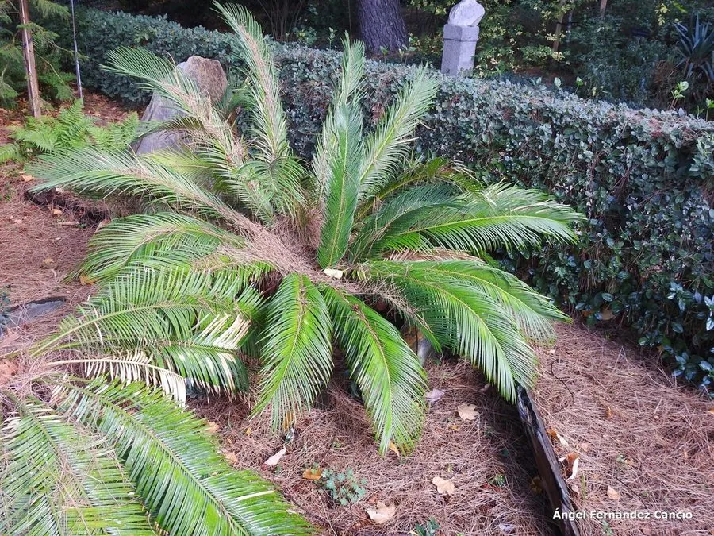

蕨类与裸子植物 · 植物界
台湾苏铁 Cycas taiwaniana

台湾苏铁是中国特有的苏铁类植物，茎干粗壮、羽叶伸展，野生种群稀少，被列为国家一级重点保护野生植物。
- 分类
- 门裸子植物门纲苏铁纲目苏铁目科苏铁科属苏铁属
- 栖息环境
- 低山丘陵的向阳山坡与灌丛，喜温暖湿润、阳光充足
- 地理分布
- 中国台湾、广东、广西、福建等地，中国特有种
- 保护级别
- IUCN 暂无评估；中国国家一级重点保护野生植物
物种志
台湾苏铁是苏铁科常绿木本植物，茎干粗壮，高可达 1–3 m，表面密布老叶柄留下的鳞片状疤痕。大型羽状叶螺旋状排列于茎顶，小叶线形、坚硬，深绿色有光泽。雌雄异株：雄株生圆柱形雄球花，雌株生扁平的雌球花，种子近球形，成熟时橙红色。
台湾苏铁是中国特有植物，分布于台湾、广东、广西、福建等地的低山丘陵，喜温暖湿润、阳光充足的环境，耐旱、耐瘠薄，生长极慢。它主要靠种子繁殖，也可分蘖。苏铁类是现存最古老的种子植物之一，对研究裸子植物演化有重要价值，也是优良的观赏植物。由于长期人为采挖与生境破坏，野生台湾苏铁数量稀少，被列为中国国家一级重点保护野生植物，严禁非法采挖与交易。
形态与习性
- 茎干高 1–3 m，表面有叶痕
- 叶大型羽状复叶，小叶线形坚硬
- 雌雄异株
- 种子近球形，成熟时橙红色
- 保护国家一级重点保护野生植物
趣味知识
- 台湾苏铁是中国特有种，野生植株已经非常稀少。
- 它的茎干上布满老叶柄留下的疤痕，像披着铠甲。
- 苏铁类是最古老的种子植物之一，被称为“活化石”。